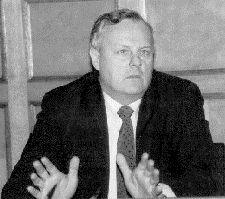

Анатолий Александрович Собчак

Анатолий Александрович Собчак (1937-2000 гг.) Родился в 1937 г. Детство провел в Узбекистане. С 1955 года в Ленинграде.Юридический факультет ЛГУ, аспирантура. Докторская диссертация на тему “Правовое регулирование хозяйственной деятельности и внедрение новых экономических методов в хозяйственный механизм”, то есть предлагал ввести капитализм в России. Диссертация была отклонена в 1979 году. И через 2 года Собчак написал и защитил новую. Он создал первую в России кафедру хозяйственного права и был единственным беспартийным заведующим кафедрой в Ленинградском университете. 1989 г. - народный депутат, член Верховного Совета СССР. С 1990 года - председатель Ленсовета. С 1991 по 1996 г. - мэр Санк - Петербурга. Автор более 300 научных статей и книг. Почетный доктор права 10 американских и европейских университетов. Лауреат международных премий. Один из ключевых деятелей периода перестройки и ранних лет постсоветской России. C 1991 по 1996 год cыграл важную роль в демократических преобразованиях в стране, способствовал переходу к рыночной экономике и развитию местного самоуправления. Среди его учеников и соратников — Владимир Путин и Дмитрий Медведев. Умер в 2000 году при не до конца выясненных обстоятельствах. .... Гнала меня и клеветала, Детей и славу отняла, А я не разлюбила - знала: Ты - дикая. Ты - не со зла. ... О.Бергольц
Примечание: Борис Майоров. Учёт дикости населения, его социальное развитие и готовность для тех или иных социальных реформ не изучена до сих пор.
|